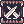

| This guide has not been updated in a while.
|

|
Information on this page may be obsolete and outdated.
Please refer to the author for information on future updates.
Reason: "Last guide update was in October 2016
|
|
| Guillotine Cross
|
|
|
| Job Base:
|
Thief
|
| Written By:
|
Ihsan
|
| Job Bonuses
|
| STR
|
AGI
|
VIT
|
INT
|
DEX
|
LUK
|
| 8
|
9
|
6
|
5
|
7
|
2
|
|
Overview
Stats
- STR: Increases Carry Weight by 30, status ATK by 1 and weapon damage.
- AGI: Increases Flee and Attack Speed.
- VIT: Increases soft DEF and total Health
- INT: Increases soft MDEF, Status MATK, total SP, and reduces Cast Time
- DEX: Increases Status ATK by 1 for every 5 points. DEX reduces cast time and increases ASPD by a small amount.
- LUK: For every 3 points, LUK increases Critical Rate by 1, and status ATK by 1. And Perfect Dodge for every 10 points
Skills
List of notable skills, explanation of their uses & mechanics & formulas
First Job Skills
| Skill
|
Notes
|
| Double Attack
|
Extremely helpful when you're a thief. Loses value once you job change.
|
| Improve Dodge
|
More flee.
|
 Hiding Hiding
|
Free Smokie Card. Needed for cloaking and can dodge some targeted skills if used right.
|
 Envenom Envenom
|
Needed for Enchant Deadly Poison and somewhat useful with Poison React.
|
 Detoxify Detoxify
|
Cures poison.
|
| Back Slide
|
5 cells backwards in a press of a button.
|
Second/Trans Job Skills
| Skill
|
Notes
|
| Katar Mastery
|
More attack with katar? Yes please.
|
 Advanced Katar Mastery Advanced Katar Mastery
|
Even more attack with katar? Yes please.
|
| Righthand Mastery
|
Some points needed to be invested in this to acquire Weapon Blocking.
|
| Lefthand Mastery
|
More points needed to be invested in this to acquire Weapon Blocking.
|
 Sonic Blow Sonic Blow
|
Single target burst. Great leveling tool in the early levels of Assassin-hood.
|
 Cloaking Cloaking
|
Mobile hide. At least three points needed to get the better version, Cloaking Exceed.
|
| Enchant Poison
|
Endows weapon with Poison. Can be used to party members and works really well with Venom Impress.
|
 Create Deadly Poison Create Deadly Poison
|
Steroid maker. Creates Poison Bottles that can be used to increase ASPD or boost damage with Enchant Deadly Poison.
|
 Enchant Deadly Poison Enchant Deadly Poison
|
Steroids. Increases damage significantly.
|
Third Job Skills
| Skill
|
Notes
|
 Rolling Cutter Rolling Cutter
|
The only useful AoE Physical Damage skill that a Guillotine Cross possesses. Main star of this guide.
|
 Cross Impact Cross Impact
|
New and improved Sonic Blow. Great in PvP but not much in PvM.
|
| Cross Ripper Slasher
|
Long-ranged Physical Attack that gets stronger the more you Rolling Cutter.
|
 Dark Claw Dark Claw
|
Increases short-ranged Physical Attack damage from both you and other sources for a short amount of time.
|
 Hallucination Walk Hallucination Walk
|
Increases flee dramatically and gives a chance to dodge Magical Attacks.
|
 Research New Poison Research New Poison
|
Steroid duration enhancer. Increases duration of Enchant Deadly Poison and enables to create class exclusive poisons.
|
 Venom Impress Venom Impress
|
Decreases a target's resistance to Poison. Works really well with Enchant Poison.
|
|  Weapon Blocking
|
Unique version of Auto Guard. Has a chance to completely block a melee physical attack.
|
 Dark Illusion Dark Illusion
|
A great gap closer that has a low chance of instantly casting Cross Impact.
|
| Poisoning Weapon
|
Endows weapon with Guillotine Cross exclusive poisons. Does not work with Venom Impress.
|
| Cloaking Exceed
|
Cloaking 2.0. Gives you invisibility, disgusting movement speed equal to using speed potions, and stays cloaked for certain amount of hits.
|
TL;DR
Equipment
Uppers
Middles
Lowers
Armors
Weapons
Garments
Shoes
Accessories
Cards
Builds
Creating a build for your GX isn't rocket science. The only thing that you should take into account is what you're going against and how can you can maximize the usefulness of your gear. Balancing your HIT (DEX), the abuse you can sustain (VIT), and your ASPD (AGI) are the only factors that play around stat building a Guillotine Cross. But for the sake of argument, I'll list a variety of builds
Your build
Introduction about the build, brief summary, optional.
Stats
- STR 120
- AGI 120
- VIT 70-90
- INT 1
- DEX 70-100
- LUK Rest
Skills
Equipment
Strategy
Gameplay
Class specific tips and tricks, such as certain skill mechanics and special roles in certain environments.
For example: Warlock's spellbook mechanics and Kage/Oboro's charms, different weapon types and their uses for Rebellions
Leveling
Leveling places and tactics go here.
Recommended format:
- Lv1 - Lv30
- Name of the map & monsters
- Lv31 - Lv70
- Name of the map & monsters

 Rideword Hat [1]
Rideword Hat [1]
 Husky Hat [1]
Husky Hat [1]
 Vanagrgand Helm [1]
Vanagrgand Helm [1]
 Evil Wing Ears [0]
Evil Wing Ears [0]
 Angle Wing Ears [1] or Evil Wing Ears [1]
Angle Wing Ears [1] or Evil Wing Ears [1]
 Monocle [1]
Monocle [1]
 Blood Sucker [0]
Blood Sucker [0]
 Gangster Scarf [0]
Gangster Scarf [0]
 Nab's Cloth [1]
Nab's Cloth [1]
 Glorious Suit [0]
Glorious Suit [0]
 Tidung [1]
Tidung [1]
 Valkyrie Armor [1]
Valkyrie Armor [1]
 Thanatos Katar [1]
Thanatos Katar [1]
 Durga [1]
Durga [1]
 Specialty Jur [4]
Specialty Jur [4]
 Giant Snake Skin [1]
Giant Snake Skin [1]
 Heroic Backpack [1]
Heroic Backpack [1]
 Cloak of Airship [1]
Cloak of Airship [1]
 Temporal STR Boots [1]
Temporal STR Boots [1]
 Temporal AGI Boots [1]
Temporal AGI Boots [1]
 Boots of Airship [0]
Boots of Airship [0]
 Physical Enhancer Ring [1]
Physical Enhancer Ring [1]
 Pendant of Maelstrom [1]
Pendant of Maelstrom [1]
 Silversmith Bracelet [1]
Silversmith Bracelet [1]
 Dark Pinguicula Card
Dark Pinguicula Card
 Duneyrr Card
Duneyrr Card
 Porcellio Card
Porcellio Card
 Bathory Card
Bathory Card
 Marc Card
Marc Card
 Swordfish Card
Swordfish Card
 Abysmal Knight Card
Abysmal Knight Card
 White Knight Card
White Knight Card
 Wakwak Card
Wakwak Card
 Green Ferus Card
Green Ferus Card
 Matyr Card
Matyr Card
 Firelock Soldier Card
Firelock Soldier Card
 Outrageous Cookie Card
Outrageous Cookie Card
 Gold Scaraba Card
Gold Scaraba Card
 Essence of Evil STR 3
Essence of Evil STR 3
 Essence of Evil AGI 3
Essence of Evil AGI 3